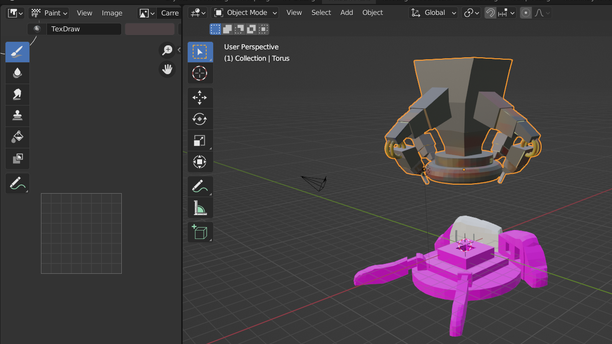
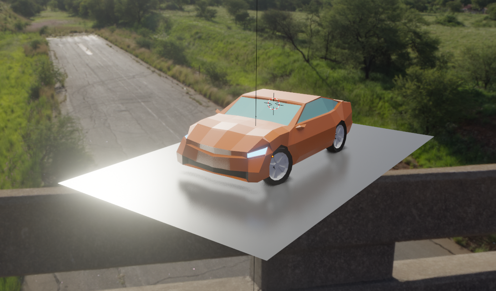
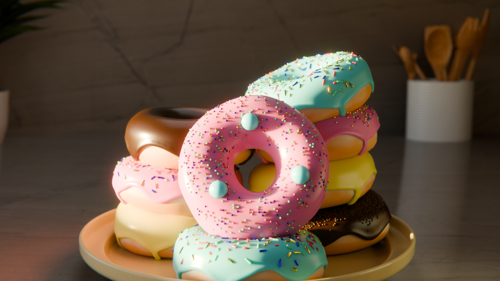

Vase de la lionne
Création d'un vase en 3D Le vase de la lionne et d'un tholos d'après des plans de l'époque. Ces deux derniers ont ensuite été intégré dans un environnement 3D pour une visite virtuelle.
Lien de la vidéo : https://www.youtube.com/watch?v=JMdfzZkTVFw
Détail du projet
Reconstitution 3D du vase de la lionne datant du VIème siècle avant JC : du site de fouille où il a été retrouvé et de l'environnement où il a vécu.
L'objectif est une visite virtuelle en VR auquel l'utilisateur peut découvrir ces deux environnements et s'instruire via un guide audio.
Ces deux environnements ont été modélisés en 3D soit par les soins de l'équipe soit via l'utilisation d'assets.
Le joueur commence dans le site de fouille : il trouve les morceaux du vase il les combine pour être téléporté dans l'environnement du 6ème siècle pour découvrir une version construite du vase dans le tholos.
Contexte
Projet réalisé en groupe de 3 sur une durée de 3 semaines, durant ma première année de Master AMINJ, en collaboration avec un client.
L'objectif était de valoriser la découverte du Vase de la Lionne, son site archéologique et son contexte historique à travers une expérience immersive en VR.
L'objectif était de valoriser la découverte du Vase de la Lionne, son site archéologique et son contexte historique à travers une expérience immersive en VR.
Mon rôle
Modélisateur 3D principal.
- Modélisation du Vase de la Lionne à partir de photographies et de reconstitutions.
- Modélisation du tholos, lieu associé à la découverte du vase.
- Création de texture PBR des briques du tholos procédurales avec le système de shader
- Création de textures PBR pour Unity : création des six maps (Base Color, Height, Metallic, Roughness, Normal et AO) à partir des textures générées dans le Shader Editor de Blender, afin de les intégrer et les exploiter dans Unity.
Technologies et outils utilisées
- Blender : Modélisation 3D
- Modificateur Array + curve : Création des briques du tholos et leurs alignements
- Shader editor : Création de textures procédurales et d'images PBR
Conclusion
Ce projet m'a permis d'expérimenter différentes approches de modélisation et de texturing 3D, tout en développant mon expérience en relation client.
De nouvelles notions qui me seront utiles dans mes futurs projets.
De nouvelles notions qui me seront utiles dans mes futurs projets.
Galerie d'image

Machine complexe crée pour le jeu Escape Le Puy - The Nightmare. Cet objet contient des textures crées par mes soins. Ceci est l'une de mes créations originales : crée à partir d'un mélange de plusieurs images trouvés. L'ojectif était d'avoir une machine volumineuse, lourde et impressionnante.
Voiture crée via un tutoriel. Cet objet a été conçu d'après des blueprints (plan du véhicule). Ce plan était à l'echelle du véhicule et contenait chaques côtés de l'engin : pratique pour avoir les bonnes dimensions lors de la modélisation.
Donut crée d'après un tutoriel. Cet objet ontient plusieurs techniques plus ou moins complexes tel que la gestion de la lumière et du rendu. Le donut à été l'un des premiers objet crée via Blender et à était ma porte d'entrée dans cette univers. J'ai refait plusieurs fois ce tutoriel dont vous voyez la dernière version que j'ai fait.